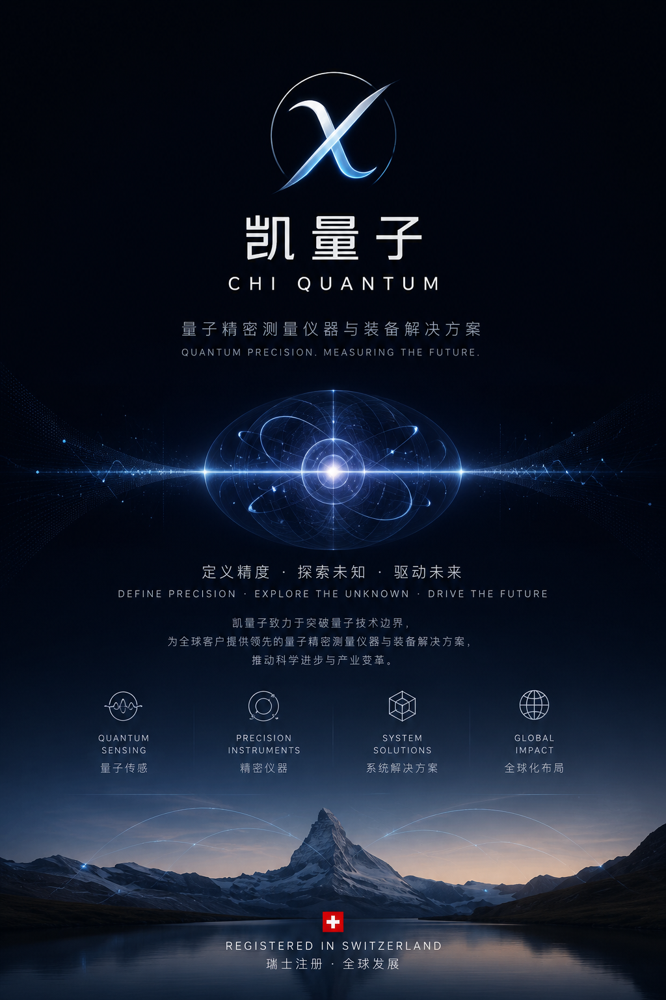
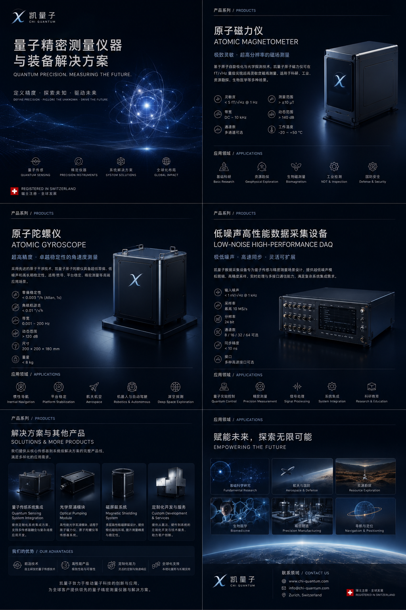

原子磁力仪
超高灵敏磁场测量，适用于基础物理、生物磁测量、无损检测与地球物理探测。
Registered in Switzerland · Global Quantum Technology Company
Quantum precision. Measuring the future.
凯量子聚焦原子磁力仪、原子陀螺仪、低噪声高性能数据采集设备及系统级量子测量解决方案，面向科研、工业、航空航天与先进装备领域。

Latest Update · 2026
凯量子发布最新动态：研究成果以 “Observation of a Novel Quantum State: Chi Quantum State” 为题，聚焦一种可类比薛定谔猫态的新型量子态。
查看动态 →Product Portfolio
超高灵敏磁场测量，适用于基础物理、生物磁测量、无损检测与地球物理探测。
面向高稳定角速度测量与惯性导航，支持平台稳定、航空航天与深空探测应用。
高分辨率、多通道、低噪声同步采集，为量子传感与精密仪器提供底层数据能力。
磁屏蔽系统、光学泵浦模块、定制化电子学与完整量子测量装备集成。
Solutions
我们提供从传感器、光电读出、低噪声电子学、数据采集到整机系统集成的端到端解决方案，帮助客户加速量子精密测量技术落地。

Applications